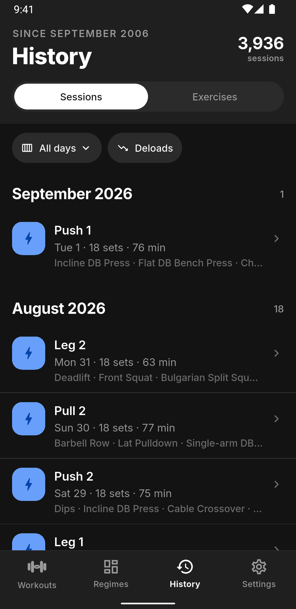
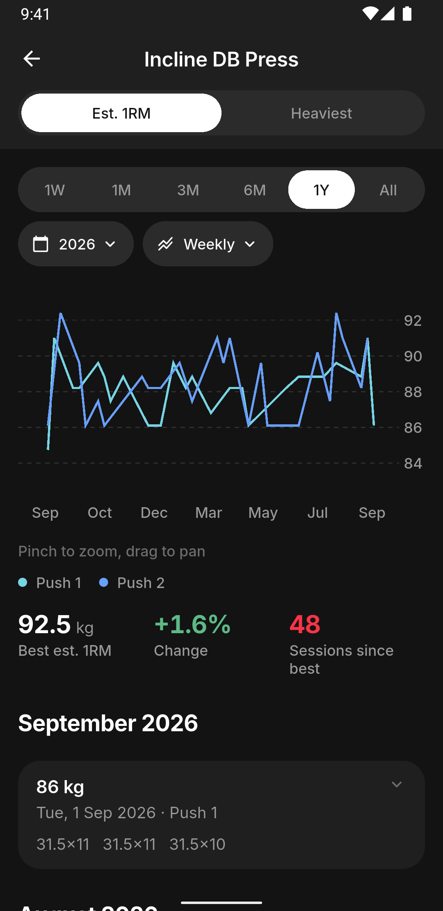
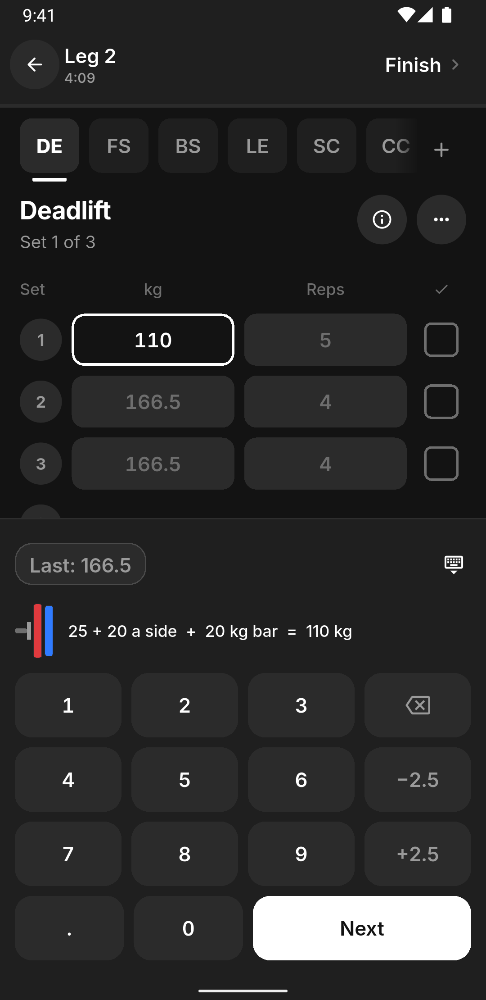

Deltoid
Every session
has its own history
The same movement on two training days progresses at two different rates. Deltoid tracks them separately, and charts every lift over years, so you can see exactly where you stalled.
Free
Fully offline
No account


